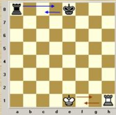
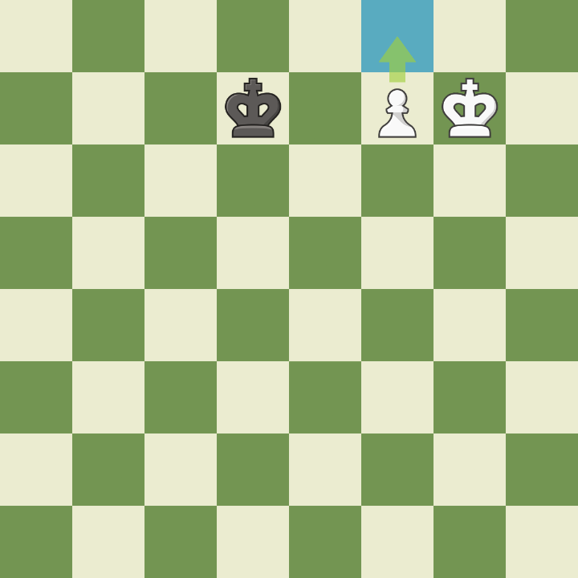
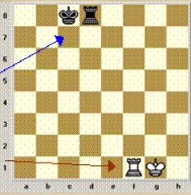
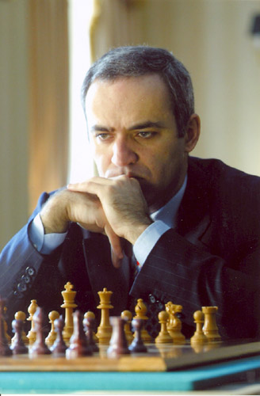
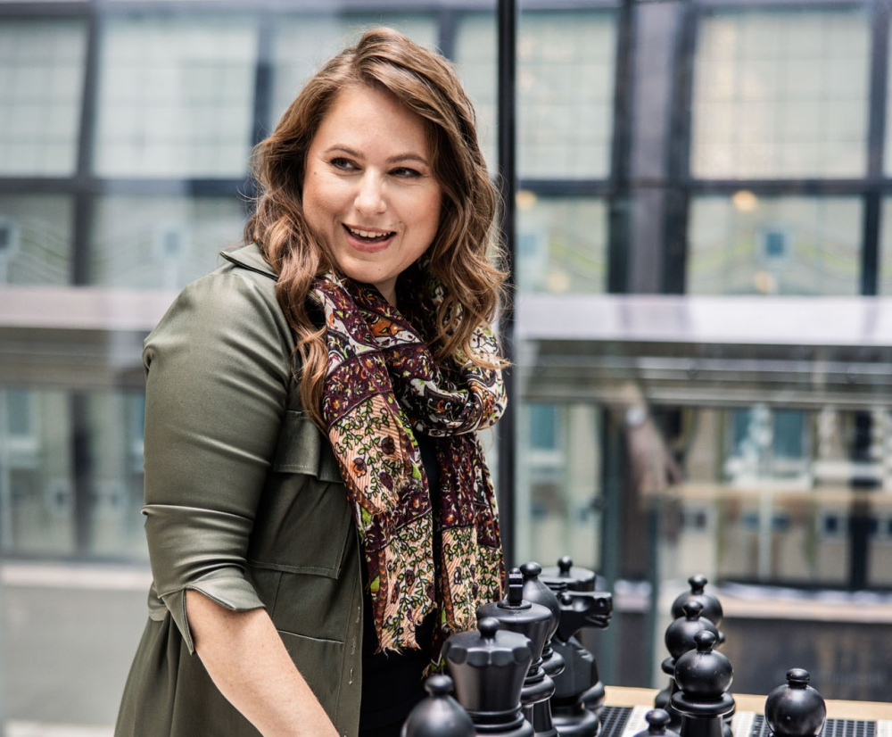
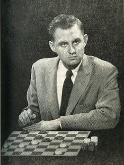
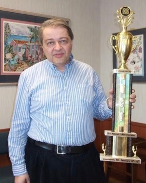

Guia de Formação
Aprende as regras, domina padrões táticos, estuda finais e conhece mestres que marcaram a história do xadrez e das damas.
Base de Estudo do Xadrez
Do primeiro lance ao xeque-mate
Para evoluíres no xadrez precisas de combinar três camadas: conhecer o movimento das peças, reconhecer padrões táticos e entender o plano geral da posição. Quem melhora mais depressa não é quem memoriza mais jogadas, mas sim quem aprende a perguntar "o que está ameaçado?", "quem controla o centro?" e "qual é a pior peça do meu lado?".
Nesta secção tens um resumo prático para jogares com mais segurança, aproveitares melhor o teu tabuleiro e reconheceres rapidamente oportunidades de ataque, defesa e conversão no final.

Segurança do Rei
Promoção do PeãoDesafio Tático: Mate em 1
Encontra o xeque-mate em apenas uma jogada. Arrasta a peça certa para a casa certa — o padrão chama-se "mate ao corredor" (back-rank mate).
As Peças do Xadrez
Rei
Move-se uma casa em qualquer direção. É a peça que nunca pode ser sacrificada. Mesmo sendo limitada, torna-se muito forte nos finais quando passa a participar ativamente na luta pelo centro e pelos peões passados.
Dama
É a peça mais poderosa do tabuleiro, combinando movimentos da torre e do bispo. Deve ser usada com critério: sair cedo demais costuma fazê-la perder tempos e ficar exposta a ataques menores.
Torre
Move-se em linhas retas. Ganha força em colunas abertas e na sétima fila. Duas torres coordenadas podem esmagar a posição adversária, sobretudo quando o Rei rival está limitado.
Bispo
Domina diagonais longas e cresce muito em posições abertas. O par de bispos é uma vantagem estratégica importante porque cobre casas de ambas as cores em simultâneo.
Cavalo
Move-se em "L" e salta por cima de outras peças. É brilhante em casas avançadas protegidas por peões, onde cria garfos, ataques duplos e enorme pressão sobre o campo inimigo.
Peão
Avança em frente e captura na diagonal. A estrutura de peões define muitos planos da partida. Peões isolados, dobrados, passados ou atrasados mudam completamente a avaliação de uma posição.
Regras Especiais e Posições-Chave
Roque Curto e Longo
O roque protege o Rei e traz uma torre para o jogo. Só podes fazer roque se o Rei e a torre ainda não se moveram, se o caminho estiver livre e se o Rei não estiver em xeque nem passe por casas atacadas.
- Roque curto: mais rápido e mais comum.
- Roque longo: mais agressivo, mas exige mais cuidado com o flanco da Dama.
- Regra prática: quanto mais cedo segurares o Rei, mais simples fica o resto da partida.
Coordenação Após o Roque
Depois de fazeres roque, o plano não termina. A próxima tarefa é ligar as torres, desenvolver a última peça menor e escolher a coluna ou diagonal onde vais criar pressão real.
- Evita abrir peões em frente ao teu Rei sem necessidade.
- Liga as torres retirando as peças entre elas.
- Identifica qual das tuas peças está pior colocada e melhora-a.

Promoção e Peão Passado
Quando um peão chega à última fila, pode promover-se normalmente a Dama. Em muitos finais, todo o jogo gira à volta de criar, apoiar ou travar um peão passado pronto a correr para a promoção.
- Dama é a promoção mais frequente.
- Promover a cavalo ou torre pode ser a melhor escolha em casos táticos especiais.
- Reis ativos são decisivos em finais de peões.
É a captura especial do peão. Se um peão adversário avançar duas casas de uma vez e ficar lado a lado com o teu peão, podes capturá-lo como se ele tivesse andado apenas uma casa. Esta possibilidade existe apenas no lance imediatamente seguinte.
É uma regra rara, mas importante: evita erros em partidas apertadas e aparece bastante em problemas táticos e em partidas rápidas.
Conceitos Táticos Fundamentais
- 1. O Garfo Uma peça ataca duas ou mais peças ao mesmo tempo. Cavalos são especialmente perigosos porque atacam de forma difícil de bloquear e conseguem criar forks sobre Rei, Dama e torres em simultâneo.
- 2. A Cravada A peça cravada não pode mexer porque abriria caminho para uma perda ainda maior. Cravadas absolutas envolvem o Rei; cravadas relativas costumam afetar Dama, torre ou uma peça importante.
- 3. O Espeto É o contrário da cravada: atacas primeiro uma peça valiosa à frente e, quando ela se move, capturas a peça menos valiosa que estava atrás. Bispos e torres são excelentes nisso.
- 4. Ataque Descoberto Mover uma peça para revelar o ataque de outra é uma forma poderosa de ganhar material. Se o lance revelado dá xeque, a força tática aumenta ainda mais porque o adversário tem menos respostas legais.
- 5. Desvio e Atração Muitas combinações funcionam por obrigar uma peça defensora a abandonar a casa crítica, ou por atrair o Rei para uma casa vulnerável onde o mate ou o ganho material se tornam inevitáveis.
Plano de Evolução em Partida
Hall da Fama - Grandes Mestres
Magnus Carlsen
Sven Magnus Oen Carlsen
Precisão Universal e Finais ImplacáveisCarlsen destacou-se por conseguir vencer posições aparentemente iguais. O seu estilo combina intuição posicional, cálculo prático e uma enorme capacidade para espremer pequenas vantagens até ao ponto de rutura do adversário.
Garry Kasparov

Garry Kimovich Kasparov
Iniciativa, Energia e Preparação TeóricaKasparov transformou a forma como muitos jogadores estudavam aberturas. A sua marca foi a iniciativa constante: preferia posições onde pudesse atacar, criar pressão e manter o rival a defender-se sem descanso.
Judit Polgar

Judit Polgar
Tática de Elite e Coragem CompetitivaPolgar tornou-se um símbolo de ambição competitiva ao jogar no circuito absoluto e derrotar vários campeões mundiais. As suas partidas mostram coragem, atividade de peças e excelente faro tático.
Bobby Fischer

Robert James Fischer
Clareza Técnica e Disciplina CompetitivaFischer combinou estudo obsessivo, precisão técnica e enorme confiança. As suas partidas são ideais para aprender desenvolvimento harmonioso, exploração de debilidades e como converter vantagem sem confusão desnecessária.
Base de Estudo das Damas
Leitura rápida, cálculo limpo e controlo das diagonais
As damas parecem simples ao início, mas exigem visão geométrica, disciplina posicional e muita atenção às capturas obrigatórias. Uma pequena distração pode entregar duas ou três peças de uma vez.
O bom jogador de damas aprende a construir posições onde obriga o rival a capturar de forma desfavorável, fecha casas-chave e coordena as suas pedras para criar sequências de saltos decisivas.
Desafio Tático: Captura Obrigatória
Jogas com as peças claras. Uma das tuas peças tem uma captura disponível — nas damas, capturar é sempre obrigatório. Encontra-a.
Regras Essenciais das Damas
Táticas e Estratégias de Damas
- 1. Armadilha de Isco Ofereces uma pedra para conduzir o adversário a uma casa onde ficará vulnerável a um salto duplo ou triplo. A isca só é boa se controlares a casa final onde o rival vai aterrar.
- 2. Bloqueio Posicional Em muitas partidas vence-se sem capturar tudo: basta retirar todas as saídas ao adversário. Fechar diagonais de fuga é um recurso fortíssimo no final.
- 3. Fixação do Flanco Pedras encostadas ao bordo não podem ser saltadas para fora do tabuleiro. Isto torna as laterais úteis para defesa, embora também possam limitar mobilidade se exagerares.
- 4. Preparação para a Promoção Não corras para a última fila sem apoio. O ideal é criar uma corrida em que a tua peça promove com segurança ou obriga o adversário a sacrificar material para a travar.
- 5. Cálculo Reverso Nas damas é muito útil calcular de trás para a frente: vê primeiro onde queres que a tua peça acabe e depois identifica as capturas obrigatórias que conduzem até lá.
Plano de Treino para Damas
Referências Históricas das Damas
Marion Tinsley

Marion Tinsley
Precisão quase perfeitaTinsley é frequentemente tratado como o maior jogador de damas de sempre. O seu jogo era incrivelmente limpo, com uma capacidade extraordinária para evitar erros e transformar pequenas vantagens em vitórias técnicas.
Alex Moiseyev

Alex Moiseyev
Mestre da estratégia modernaAlex Moiseyev é conhecido por combinar planos profundos e habilidade técnica. Foi campeão mundial várias vezes e popularizou formas de jogar que valorizam o controlo do centro e a gestão de finais.